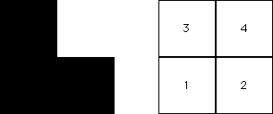
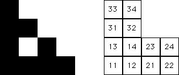
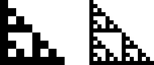

If T4 is never applied, then no points land in the subsquare S4 with address 4. That is, the upper right subsquare is completely empty.
|  |
Because the subsquare S4 contains no points, the
subsquares
|  |
Continuing, the subsquares
if i=4, j=4, or k=4, the subsquare Sijk contains no points (below left).
Similarly,
the subsquare Sijkm contains no points if any of i, j, k, or m is 4 (below right).
|  |
The result of continuing this process is clear:
if T4 is never applied, every square whose address contains a 4 is empty.
With this restrction, we see the IFS generates a right isosceles Sierpinski gasket. This is no surprise, because the IFS {T1, T2, T3} generates a right isosceles Sierpinski gasket.
Return to Four Gaskets.